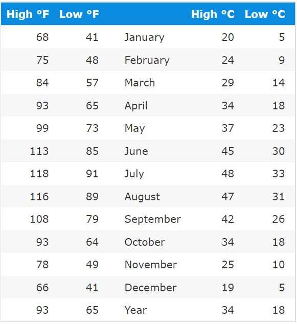

By Season
Death Valley is on the border between the Mojave and Great Basin Deserts. It's the hottest place on earth and the driest spot in North America, getting less than 2 inches of rain per year on average. In any season, if you find it too hot on the valley floor, go up. Temperatures drop by 3 to 5°F for every 1,000 feet of elevation. That makes Ubehebe Crater and Scotty's Castle 10 to 15°F cooler than Badwater or Furnace Creek.
The Death Valley weather data were recorded at Furnace Creek in Death Valley National Park, at an elevation of 194 feet (59 metres) below sea level. The first set of high and low temperatures are averages for 2010 to 2019. Everything else here is based on 1991 to 2020 measurements.
